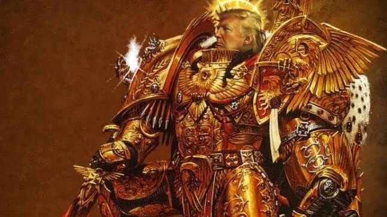
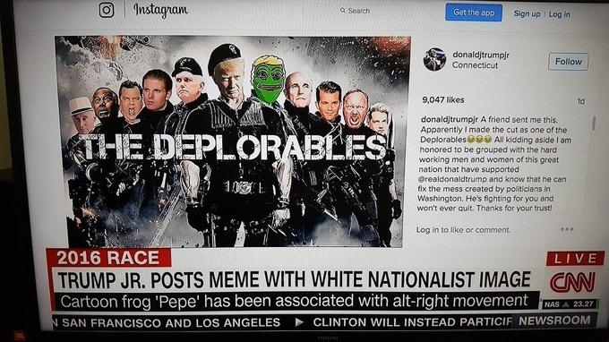

COUNTRY COLLECTION · UNITED STATES
United States: election memes and online political culture
Browse entries on Trump memes, attacks on Hillary Clinton, Russia-linked Twitter accounts, anti-Muslim and racist imagery, and the changing meanings of Pepe the Frog.
← Back to United StatesENTRIES
Explore the themes
Each entry introduces the memes, describes their origins and history, and presents related images and sources.

ENTRY
MAGA memes and “God Emperor” Trump
Heroic imagery, exaggerated power, political fandom, and the visual construction of a larger-than-life leader.
Read entry ↗
ENTRY
Mockery of opponents: Clinton and “deplorables”
Attack labels, campaign ridicule, and the reappropriation of a phrase.
Read entry ↗
ENTRY
Russian interference and Twitter meme pages
What studies of IRA-linked accounts show—and what they do not establish about effects.
Read entry ↗
ENTRY
Race, religion, and xenophobic meme framings
How stereotypes and humour can mark minority groups as outsiders.
Read entry ↗
ENTRY
Pepe the Frog: appropriation and afterlife
From comic character to contested symbol; why context matters.
Read entry ↗